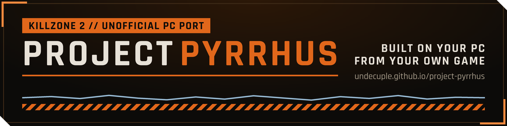

Work in progress

Project PyrrhusKillzone 2: Unofficial PC Port (static recompilation)
A native Windows x64 port of the 2009 PS3 game, made by static recompilation: the game's PowerPC and SPU code is translated to C ahead of time and compiled into a PC program; graphics go through Direct3D 12. No emulator runs at play time.
Status: Partly playable
You need your own copy of the game. This project ships no game code, data, assets or keys.
About
The port is built on ps3recomp (MIT): the PPU code and the game's SPU programs are lifted to C, the PS3 system libraries the game calls are reimplemented, and the game's RSX command stream is replayed on Direct3D 12. The game's archive is read in place from your dump. It is tested on Windows x64 under Proton.
It follows Project Helghast, the same method applied to Killzone 3, and reuses its general runtime work. How it works and what comes next: the README.
Status
Generated from the repository's own records (the same data as FEATURES.md). Works is claimed only with a recorded result.
- Works PPU lift of the EBOOT static recompilation of all PPU code
- Works Boots under Proton to the first screen loader, PPU start, SPURS, GCM init, first flip
- Partial Title screen and main menu language select, main menu, New Campaign and difficulty
- Partial Mission 1 loads and runs
- Partial In-level play (move, aim, fire, cover) gamepad
- Not yet Full campaign start to finish all missions, checkpoints, cutscenes
The PS3 game, feature by feature
Campaign
| Feature | On the PS3 | In the port |
|---|---|---|
| Intro movies and cutscene videos | 28 H.264 720p AVIs with AC-3 5.1 (FFmpeg, LGPL DLLs): the intro movie plays with pictures and clean sound; its 5.1 track is mixed down to stereo (see Surround sound); the other movies are not yet checked | Partial |
| Title screen and main menu | language select, main menu, New Campaign and difficulty | Partial |
| Mission 1 loads and runs | Partial | |
| In-level play (move, aim, fire, cover) | gamepad | Partial |
| Full campaign start to finish | all missions, checkpoints, cutscenes | Not yet |
| SIXAXIS motion sections | valve wheels, charges | In progress |
| Checkpoint save and load | cellSaveDataUserAutoSave/AutoLoad | Partial |
| Pause menu | in-level pause screen | Partial |
| Mission Select and difficulty | mission list with picture, collectibles, difficulty | Partial |
| Full frame rate (30 fps in levels) | the PS3 holds about 30 frames per second | In progress |
Audio
| Feature | On the PS3 | In the port |
|---|---|---|
| Sound and music | cellAudio, XVAG sound banks | Partial |
| Surround sound (5.1 / 7.1 output) | the PS3 outputs 5.1 and 7.1; the port mixes everything down to stereo (cellAudio opens a 2-channel Windows output and folds the 8-channel port into it) | Not yet |
Options
| Feature | On the PS3 | In the port |
|---|---|---|
| Settings and controls menus | Partial |
Multiplayer
| Feature | On the PS3 | In the port |
|---|---|---|
| Skirmish (offline bots) | Not yet | |
| Online Warzone | self-hosted only (the project's online rules) | Not yet |
Other
| Feature | On the PS3 | In the port |
|---|---|---|
| Trophies | Not yet | |
| Debug menu as a test aid | TEST MENU (chapter/level/section/weapon select), pause-menu god/ammo | Partial |
| Language selection and subtitles | language page, briefing subtitles | Partial |
Port work and additions
All port rows
| Feature | What | State |
|---|---|---|
| Patched ps3recomp toolkit | v0.18.0 + Project Helghast's (the Killzone 3 port's) general patch set + KZ2's own | Works |
| PPU lift of the EBOOT | static recompilation of all PPU code | Works |
| Windows build | MinGW x64 exe, memory-capped build | Works |
| Update 1.29 EBOOT as the target | port the latest update | Works |
| Boots under Proton to the first screen | loader, PPU start, SPURS, GCM init, first flip | Works |
| SPU jobs and SPURS | 23 SPU ELFs + 36 job modules | In progress |
| RSX renderer (D3D12) | deferred renderer, 1280x720 2x MSAA | Partial |
| Game data access (PSARC, case-duplicate trees) | data_ps3.psarc v1.3, 3,444 unique names; 1.29 added_data + patch_data | Partial |
| .core resources (RTTIBin<1.58>) | core.py decodes KZ2's resources | Partial |
| Saves (PROFILE/CHECKPNT/SECTION.DAT) | map and stage the game's save files | Partial |
| Front-end page engine (SVML menus) | the game's kin/*.jsp pages from the psarc (interface/svo/svml/<lang>/kin), drawn by the SVO browser | Partial |
| Gyro stand-in for SIXAXIS | ENHANCEMENT: stick or mouse | In progress |
| Display modes | ENHANCEMENT: windowed, borderless, exclusive fullscreen, Alt+Enter, display.ini | In progress |
| Gamepads: PlayStation and Xbox | ENHANCEMENT: pads through SDL3: DualShock 4 tried by hand, with its motion sensor; Xbox and DualSense pads in code only | Partial |
| Button prompt choice and pad layouts | ENHANCEMENT: PS3, PS4/PS5, Xbox or keyboard prompt symbols; Original or Modern button layout | Partial |
| Movie playback through FFmpeg | ENHANCEMENT: movies decoded by FFmpeg LGPL decoders in separate DLLs | Partial |
| Reuse an existing RPCS3 install | ENHANCEMENT: the setup can find an RPCS3 install and reuse its game files, with an optional, separate save copy | In progress |
| Launcher and window controls | ENHANCEMENT: launcher (pad layout, display), window close shuts down cleanly | Partial |
Requirements
What you need
| Item | Required | Details |
|---|---|---|
| Operating system | yes | Windows 10 or 11, 64-bit. Tested so far only under Proton on Linux. |
| Graphics card | yes | A GPU with Direct3D 12 support. |
| Killzone 2 disc dump | yes | Your own copy of the US disc (BCUS98116), dumped to a folder. |
| Update 1.29 | yes | The game's last update, from your own console or copy. |
| Decrypted EBOOT | yes | The game's main program (EBOOT.elf), decrypted, made from your own copy. This project ships no decryption tools or instructions. |
Hardware to play
| Minimum | Recommended | |
|---|---|---|
| CPU | x86-64 with AVX and FMA3 (about 2013 or later; checked at start-up); speed not measured yet | not measured yet |
| Memory | not measured yet | not measured yet |
| Graphics card | Direct3D 12 | not measured yet |
| Disk space | not measured yet | not measured yet |
Hardware figures come once the game runs; none are claimed before that.
Install
Not released yet.
The planned release is a Windows installer and a portable zip. They check your own disc dump and the 1.29 update, then translate and build the game's code on your own machine with a bundled compiler, with one progress bar and a full install log. Nothing of the game is shipped or downloaded; your dump is read where it is, never copied.
Until then you can build the port from source: building. Releases will appear on the releases page.
What goes online
Nothing unless you ask. The port does not start any connection of its own; the version check and update download are off until you turn them on. Online multiplayer, if it comes, will only use a self-hosted server you choose. See the README.
Legal
Killzone and Killzone 2 are trademarks of Sony Interactive Entertainment. This project is not affiliated with or endorsed by Sony Interactive Entertainment or Guerrilla Games; the names are used only to say which game the port runs. No game content is distributed: no disc files, no decrypted or translated game code, no assets and no keys. Players supply their own copy of the game; the game's code is translated and compiled on the player's own machine from their own files.
The port's own code, tools and documentation are MIT. Third-party components and credits: NOTICE.md.